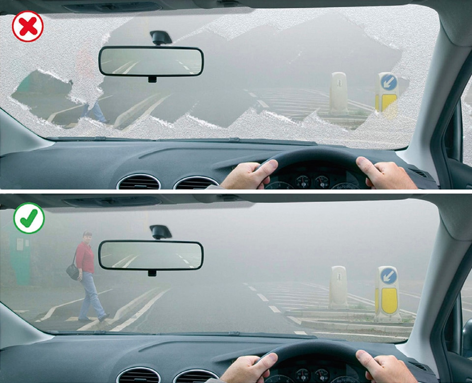

Driving in adverse weather conditions (226 to 237)
|
3. Icy and snowy weather (228 to 231)
228
In winter check the local weather forecast for warnings of icy or snowy weather. DO NOT drive in these conditions unless your journey is essential. If it is, take great care and allow more time for your journey. Take an emergency kit of de-icer and ice scraper, torch, warm clothing and boots, first aid kit, jump leads and a shovel, together with a warm drink and emergency food in case you get stuck or your vehicle breaks down.
229
Before you set off
In winter check the local weather forecast for warnings of icy or snowy weather. DO NOT drive in these conditions unless your journey is essential. If it is, take great care and allow more time for your journey. Take an emergency kit of de-icer and ice scraper, torch, warm clothing and boots, first aid kit, jump leads and a shovel, together with a warm drink and emergency food in case you get stuck or your vehicle breaks down.
229
Before you set off
- you MUST be able to see, so clear all snow and ice from all your windows
- you MUST ensure that lights are clean and number plates are clearly visible and legible
- make sure the mirrors are clear and the windows are demisted thoroughly
- remove all snow that might fall off into the path of other road users
- check your planned route is clear of delays and that no further snowfalls or severe weather are predicted.
Laws CUR reg 30, RVLR reg 23, VERA sect 43 & RV(DRM)R reg 11

Rule 229: Make sure your windscreen is completely clear
230
When driving in icy or snowy weather
Drive extremely carefully when the roads are icy. Avoid sudden actions as these could cause loss of control. You should
When driving in icy or snowy weather
- drive with care, even if the roads have been treated
- keep well back from the road user in front as stopping distances can be ten times greater than on dry roads
- take care when overtaking vehicles spreading salt or other de-icer, particularly if you are riding a motorcycle or cycle
- watch out for snowploughs which may throw out snow on either side. Do not overtake them unless the lane you intend to use has been cleared
- be prepared for the road conditions to change over relatively short distances
- listen to travel bulletins and take note of variable message signs that may provide information about weather, road and traffic conditions ahead.
Drive extremely carefully when the roads are icy. Avoid sudden actions as these could cause loss of control. You should
- drive at a slow speed in as high a gear as possible; accelerate and brake very gently
- drive particularly slowly on bends where loss of control is more likely. Brake progressively on the straight before you reach a bend. Having slowed down, steer smoothly round the bend, avoiding sudden actions
- check your grip on the road surface when there is snow or ice by choosing a safe place to brake gently. If the steering feels unresponsive this may indicate ice and your vehicle losing its grip on the road. When travelling on ice, tyres make virtually no noise.